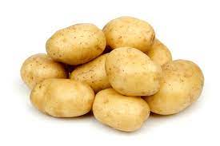

Quieres PAPAS o quieres PERAS

Solanum tuberosum, de nombre común papa o
patata,es una especie herbácea perteneciente al género Solanum de la familia
de las solanáceas, originaria de la región que comprende el altiplano sur del Perú.Fue domesticada
en el altiplano andino y en las cercanías del lago Titicaca por los habitantes de esta región desde
hace unos ocho mil años.En el sigloXVI comenzó a ser trasladada a Europa por los conquistadores
españoles quienes la consideraban una curiosidad botánica y no una planta alimenticia. Su consumo fue
reciendo, aunque al principio como planta forrajera y de jardín por sus flores; su uso gastronómico
se expandió a todo el mundo desde el siglo XVIII gracias a los escritos agronómicos del francés Antoine
Parmentier y del irlandés afincado en España Enrique Doyle, hasta convertirse en uno de los principales alimentos del ser humano.
Se denomina pera al fruto de distintas especies del género Pyrus, integrado por árboles caducifolios
conocidos comúnmente como perales. Sin embargo, cuando se trata del fruto comestible, se hace referencia
mayormente al producido por el llamado peral común (Pyrus communis). La pera es una fruta muy jugosa,
carnosa y una de las más importantes producidas en las regiones templadas.